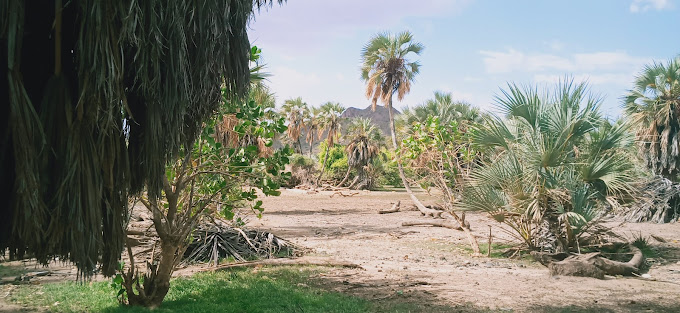

Sibiloi National Park – The cradle of mankind
This park is located on the wild and rugged shores of Lake Turkana and is home to important
archaeological sites including Koobi Fora where the fossil remains have contributed more to the
understanding of human evolution than any other site on the continent. The area is characterized by
semi-desert habitat and open plains flanked by volcanic formations including Mount Sibiloi, where the
remains of a petrified forest can be seen.
Sibiloi serves as a stopover for migrant waterfowl and is a major breeding ground for the Nile
crocodile. Terrestrial wildlife includes zebras, Grant gazelles, lions, leopards, stripped hyenas, Beisa
Oryx, greater kudu, cheetahs and northern topi among others. A total of over 350 species of aquatic and
terrestrial bird have been recorded in Lake Turkana. Sibiloi is surrounded by the Turkana, the Gabra and
the Dassanach who are communities with very rich and unpolluted traditional cultures.

Here are some of the activities that you can do while in Sibiloi
Fossil Sites: Sibiloi is famous for its rich deposits of fossils, including those of early hominids like Homo habilis and Homo erectus. Tourists can visit sites such as Koobi Fora, where numerous significant fossil discoveries have been made, providing insights into human evolution.
Lake Turkana: The park's location on the northeastern shore of Lake Turkana offers breathtaking views of one of the world's largest desert lakes. Tourists can enjoy boat safaris, fishing excursions, or simply relax by the lake and take in the stunning scenery.
Wildlife Viewing: While Sibiloi is not as well-known for its wildlife as other parks in Kenya, visitors can still encounter a variety of animals such as crocodiles, hippos, zebras, and various bird species. Game drives offer opportunities to spot these animals in their natural habitat.
Cultural Interaction: The area surrounding Sibiloi is inhabited by local communities such as the Turkana people. Tourists can engage in cultural experiences, including visits to traditional Turkana villages, where they can learn about the local way of life, customs, and traditions.
Scenic Landscapes:Sibiloi National Park boasts diverse landscapes, including volcanic formations, rocky outcrops, and desert terrain. Tourists can explore the park on foot or by vehicle, taking in the unique beauty of the area.
Archaeological Sites: In addition to fossil sites, Sibiloi is home to archaeological remains dating back thousands of years. Visitors can explore ancient settlements, burial sites, and artifacts, gaining insights into the region's rich cultural history.
Wildlife
Crocodiles: Lake Turkana is home to Nile crocodiles, and visitors may spot them basking along the shores or floating in the water.
Hippos: Although not as abundant as in other areas, hippos can still be found in Lake Turkana and its surrounding areas.
Zebras: Plains zebras can sometimes be seen grazing in the park's grasslands.
Gazelles: Various species of gazelles, such as Grant's gazelle and Gerenuk, can be found in the park.
Ostriches: Sibiloi National Park is home to a population of ostriches, the largest birds in the world.
Birds: The park is a haven for birdwatchers, with over 350 bird species recorded, including flamingos, pelicans, eagles, and vultures.
Best time to visit Sibiloi
Weather: Sibiloi National Park experiences a hot and dry climate for much of the year, with temperatures often exceeding 30°C (86°F). The hottest months are typically from January to March, while the coolest months are from June to August. The dry season, which runs from July to October, is generally considered the best time to visit as wildlife is more concentrated around water sources, making for easier sightings.
Rainfall: The wet season in Sibiloi National Park occurs from March to June and October to December. While the landscape becomes greener during this time, wildlife may be harder to spot as animals disperse across larger areas to find water and food. However, the wet season can be a rewarding time to visit for birdwatching enthusiasts, as migratory birds flock to the area.
Paleontological Excavations: If you're particularly interested in paleontology and archaeology, you may want to coincide your visit with ongoing excavations and research activities in the area. These activities may vary depending on the time of year and the schedules of research teams.
Crowds: Sibiloi National Park is not as heavily visited as some other parks in Kenya, but visitor numbers may still fluctuate seasonally. If you prefer to avoid crowds, consider visiting during the shoulder seasons (April to June and September to October) when visitor numbers tend to be lower.